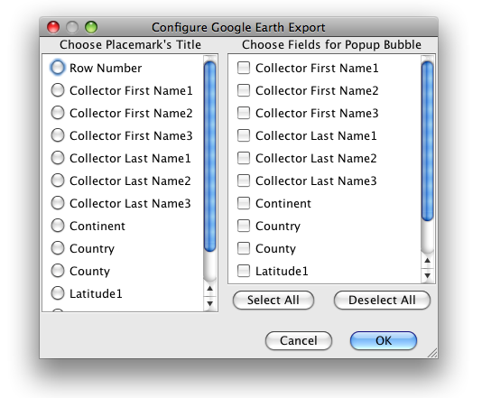

Google Earth is used as a means of visualizing Data Set records from the WorkBench in Google Earth. The WorkBench can generate a Google Earth KML file from row data in a Data Set and load it into Google Earth. The rows display as 'push pins' which are identified by their row number. Clicking on the push pin displays the row information as a pop-up window.
To display records in Google Earth, sweep records in the Data Set to select them and click the Google Earth button ( ). To map an entire Data Set either select all the records or no records.
). To map an entire Data Set either select all the records or no records.
A dialog appears allowing the information include in the Google Earth push pin to be configured.

Choose one Placemark Title from the left column (Choose Placemark's Title) choices and as many data Fields as necessary from the right column (Choose Fields for Popup Bubble) choices.
Google Earth will then launch and plot the data from the Data Set.

Google Earth Results
Record locations are marked with a Specify icon. Click the icon to display the record data from the Data Set.